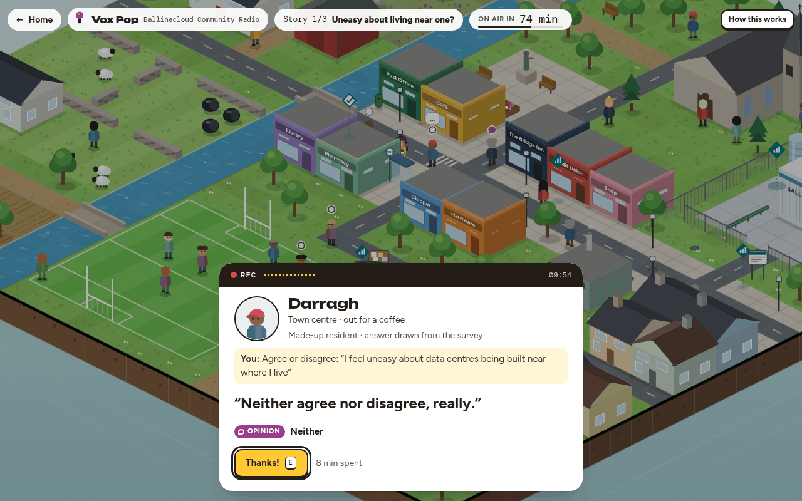
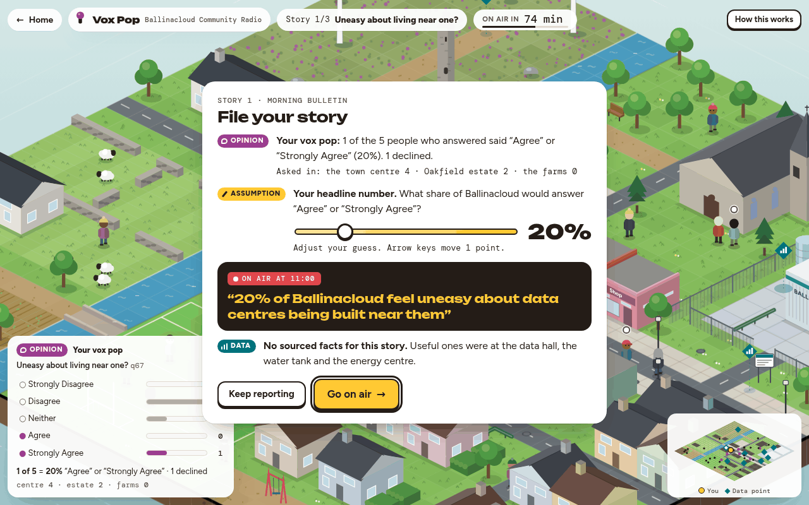
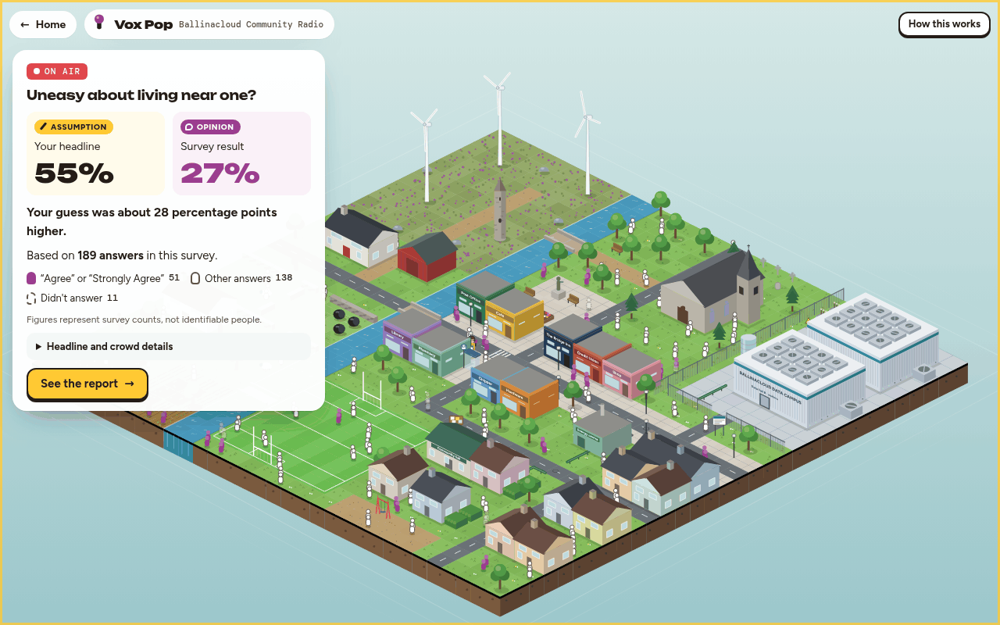
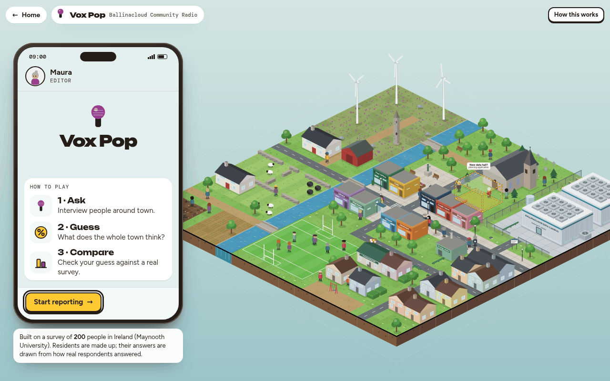
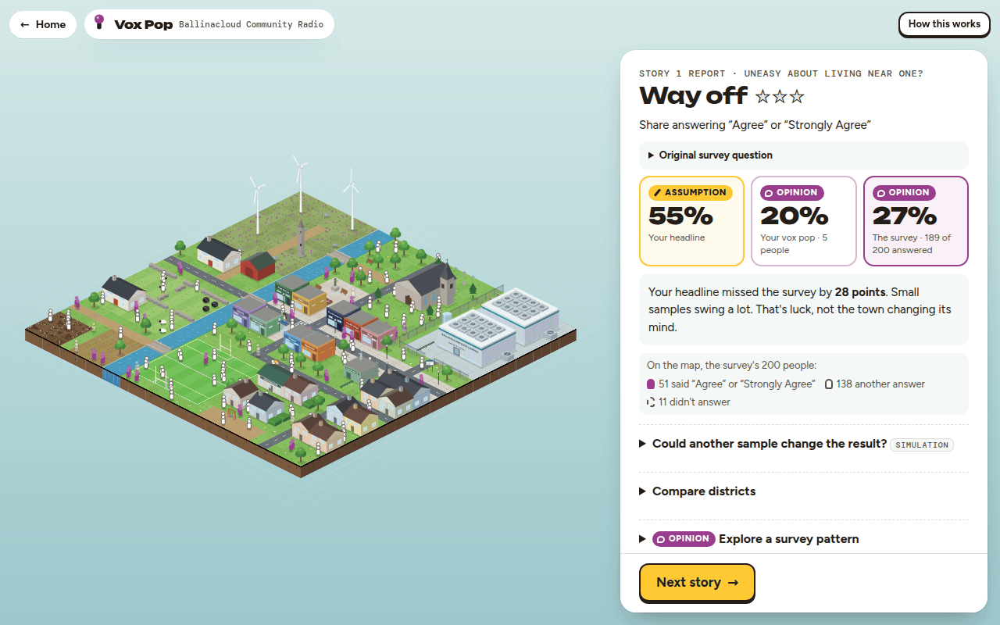
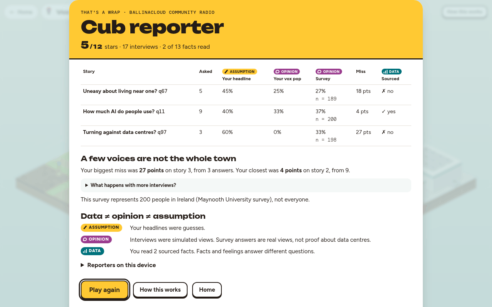

A reporting game about data centres
Vox Pop
Ask the street. Guess the town. Meet the 200.
You're a local radio reporter in a made-up Irish town next to a data-centre campus. Interview the residents and guess what the whole town thinks - then see your handful of answers next to a real survey of 200 people in Ireland (Maynooth University survey).
Runs in your browser · no install · about 5 minutes
How it plays
Ask. Guess. Compare.
One day on the job: three stories, from the morning bulletin to the six o'clock news. Each story takes the same three steps.
-
1 · Ask
Interview people around town.
Walk around Ballinacloud and put one survey question to anyone you meet. The residents are made up; their answers are drawn from how real respondents answered.
Arrows or click to walk · E to talk

-
2 · Guess
What does the whole town think?
Before the deadline, file your story: set one headline number for the whole town, based on the few people you asked.
F to file your story

-
3 · Compare
Check your guess against a real survey.
Go on air and meet the 200: the town fills with one figure per survey respondent, next to your headline. Then see how 100 simulated reporters would have done.
Three stories, then your press card

Keyboard or mouse. A No deadline switch stops the clock if you'd like to take your time.
The idea
Data ≠ opinion ≠ assumption
Everyone has a view on data centres. Some of it is measured, some of it is felt and some of it is simply assumed. The game labels all three, everywhere. Three real examples:
-
Data
Measured, with a source you can check.
–
of Ireland's metered electricity went to data centres in –.
Source: Central Statistics Office (CSO)
-
Opinion
What people say they think or feel. Real, but not proof.
–
of people who answered support sustainable data centres in Ireland. Yet – would find one built within 5 km of their home acceptable.
Survey q96 (n = –) and q77 (n = –)
-
Assumption
Taken for granted without checking. In the game, it's your headline guess.
–
of people who answered said "All data centres in Ireland run on fossil fuels" is true.
Checked: .
Survey q18 (n = –) · checked against SEAI
From the reporter's notebook
A few voices are not the whole town.
That's what the game is really about. A vox pop - a handful of people asked on one street - can sound like "what people think". In Vox Pop you run one yourself, then see how far it lands from the full survey, and how much depends on where you asked.
Every number in this section is calculated live from the survey file and the fact sheet in data/.
Screenshots
Inside the game
-

Your editor's phoneHow to play in three steps, then a brief for each story, with two questions to choose from. -

The story reportYour headline, your vox pop and the survey side by side, plus 100 simulated reporters and the district results. -

The end of the dayYour press card, all three stories, the lesson from your own run and every source used.


About the data
A real survey, a made-up town
Vox Pop is built on Social Acceptance of Sustainable Data Centres in Ireland, a Maynooth University survey: 200 people in Ireland, – questions, supplied for the BU Induction Hack 2026.
-
Totals only. The game uses how many people chose each answer, plus two-way cross-tabs. No individual response is anywhere in the game or in this repo.
-
Small groups are flagged. Any cell with fewer than 3 people is hidden, and a group under 30 people carries a "small group" note.
-
The residents are made up. Ballinacloud and everyone in it are invented. Each answer a resident gives is drawn at random from how real respondents from the same kind of area answered.
-
In this survey, not "in Ireland". It tells us what these 200 people said, not what the whole country thinks. A cross-tab shows a pattern, not a cause.
Main sources
- CSO - data centre electricity, 2015-2025cso.ie
- SEAI - renewable electricity statisticsseai.ie
- EirGrid - renewable constraint and curtailment 2024eirgrid.ie · PDF
- CRU - data centre connection policy (Dec 2025)cru.ie
- KPMG for DETE - The value of data centres to Ireland (2026)enterprise.gov.ie · PDF
- IEA - Energy and AIiea.org
Every source used is listed inside the game, on the end screen, along with the survey questions behind each story.
Team and credits
Who made it
Made by Mehmet Özel, Yavuz Aydın and İbrahim Yılmaz at the BU Induction Hack 2026.
The brief: Data centres: behind the headlines - make data playable.
Code: MIT License · Survey data: Maynooth University (not covered by the licence)
Plain HTML, CSS and JavaScript with no build step. The town, its people and every chart are drawn in code.